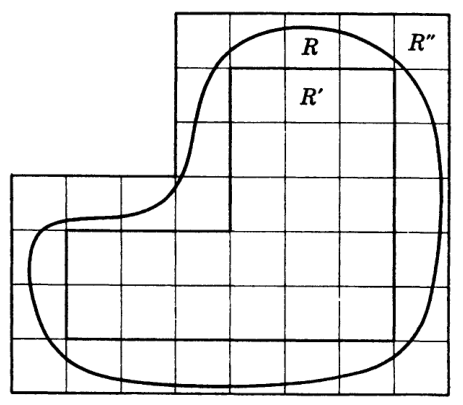
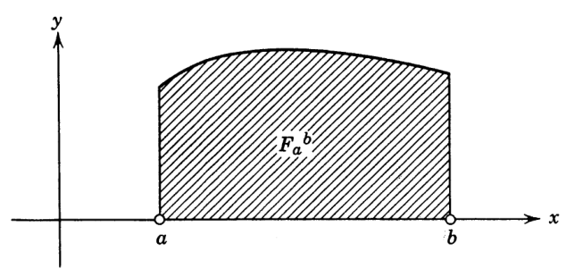
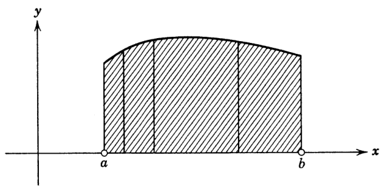
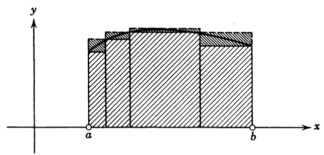
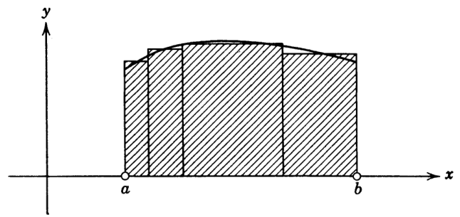
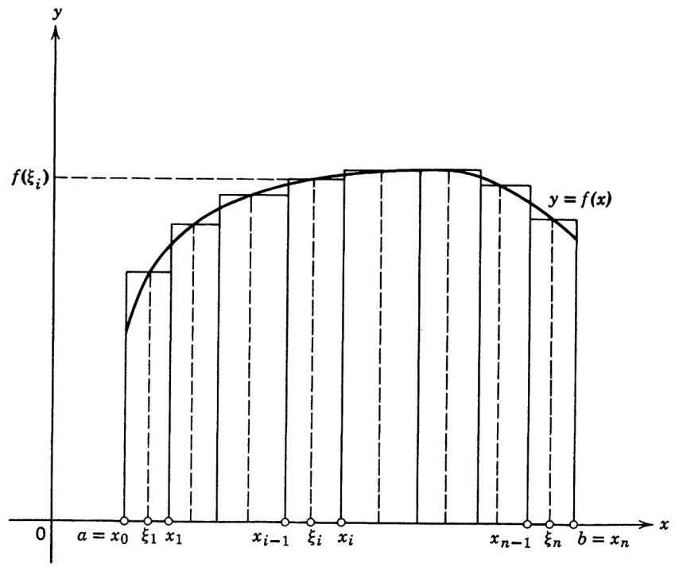
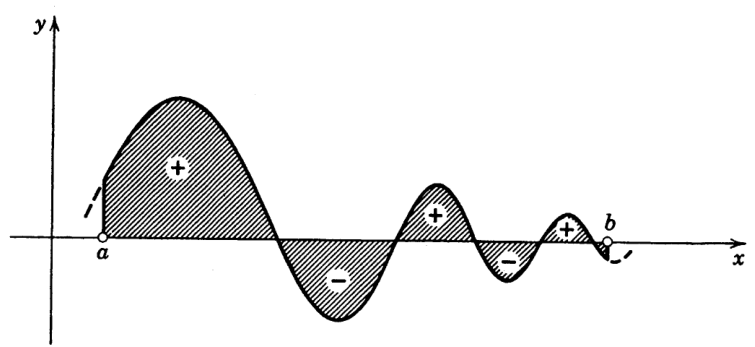
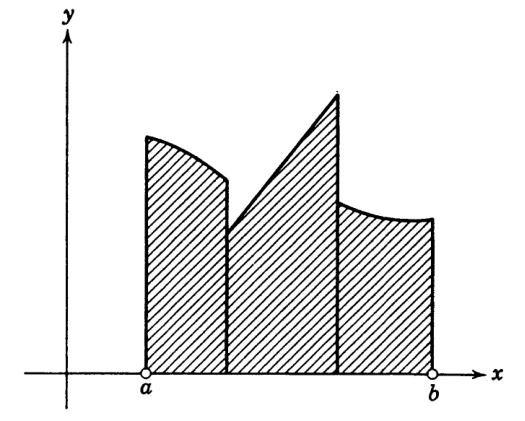
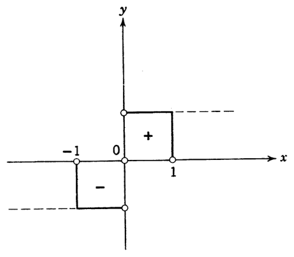

a. 引言
几何和自然科学提出了许多直观概念，需要给它们以精确的数学描述。经过漫长的发展，积分与微分这两套系统的方法才满足了这种需要。要描述曲线的切线、运动质点的速度，或者更一般的变化率，就需要微分的概念。要精确表述曲边区域的面积这一直观概念，就要用到积分过程。后面我们还会看到，几何和物理中许多与此相关的概念同样需要积分。本节从求曲线所围平面区域的面积这个问题入手，引进积分的概念。
面积。 凭直观我们感到，闭曲线围成的区域有一个“面积”，它量出曲线内部有多少个单位正方形。但要用精确的语言说明这种度量，必须经过一连串数学步骤。直观提示我们，面积有以下基本性质：面积是一个（正）数，其值依所选的长度单位而定；全等图形的面积相等；矩形的面积等于两条邻边长度的乘积；一个区域若分成几部分，整个区域的面积等于各部分面积之和。
由此立即得出，若区域 A 是区域 B 的一部分，则 A 的面积不能超过 B 的面积。
凡能分成有限个矩形的图形，利用这些性质就可以直接算出面积。更一般地，要为区域 R 的面积确定一个数值 F，我们取另外两个都能分解成矩形的区域：内接区域 R′ 包含在 R 中，外接区域 R′′ 则包含 R（图 2.1）。这样至少知道，F 必介于 R′ 与 R′′ 的面积之间。如果能找到两列可以分成矩形的区域，一列外接于 R，记为 Rn′′，另一列内接于 R，记为 Rn′，并且当 n 趋于无穷时两列区域的面积有相同的极限，那么 F 便完全确定了。这就是源于古代的“穷竭法”，初等几何正是用这种方法来说明圆的面积。¹ 把这一直观思想精确化，就引出了积分概念。

图 2.1 面积的近似
原注 1（第 121 页） 当然，内接和外接的图形可以采用任何多边形，因为多边形可以分解成直角三角形，而直角三角形的面积显然等于以两条直角边为邻边的矩形面积之半。
b. 作为面积的积分
曲线下的面积
把面积同函数联系起来，便会产生积分这个分析概念。设一个区域左右两边分别以竖直线 x=a、x=b 为界，下界是 x 轴，上界是正的连续函数 f(x) 的图像（图 2.2）。这个区域的面积简称为“曲线下的面积”。我们暂时凭直观承认，这样一个区域的面积是一个确定的数。称这个面积 Fab 为函数 f 在积分限 a、b 之间的积分。¹

图 2.2
原注 1（第 122 页） 用“限”（limit）一词指积分区间的端点，同它的另一层意思“极限”应不致混淆。
要求 Fab 的数值，可以用矩形面积之和去逼近它。为此，把 x 轴上的区间 (a,b) 分成 n 个小段，长度不必相等，称为小区间。在每个分点作 x 轴的垂线，直至曲线。这样，面积为 Fab 的区域就分成了 n 个窄条，每个窄条以函数 f(x) 图像的一段及三条直线段为边界（图 2.3）。

图 2.3
面积或积分作为和的极限。 精确地求窄条的面积，并不比求原来整个区域的面积容易。不过，我们可以用与每个窄条同底的外接和内接矩形的面积，从上、下两面去逼近它。为此，把窄条的曲边换成水平线，它到 x 轴的距离分别取为 f(x) 在该小区间内的最大值或最小值（图 2.4）。更一般地，可以采用介于二者之间的近似：用同底矩形代替窄条，只要矩形顶端的水平线与窄条的曲边相交即可（图 2.5）。用分析的语言说，这就是在每个小区间内，用某个介于最大值与最小值之间的常值代替 f(x)。

图 2.4

图 2.5
用 Fn 表示这 n 个矩形的面积之和。直观告诉我们，分割越来越细时，即 n 无限增大，同时各小区间中最大的长度趋于零时，Fn 就趋于 Fab。这样，Fab 就表示成了若干矩形面积之和的极限。
c. 积分的分析定义与记号
积分的定义与存在性
前一段先把曲线下的面积当作直观给出的量，然后才把它表示成极限。现在要把次序倒过来。我们要从前面定义的和 Fn 出发，纯粹用分析的方法证明它们趋于一个确定的极限。再用这个极限，给积分和面积下一个精确的定义。
设函数 f(x) 在闭区间 a≤x≤b 上连续（不要求为正）。取 n−1 个分点 x1,x2,…,xn−1，把区间分成 n 个等长或不等长的小区间。再置 x0=a, xn=b（图 2.6），各小区间的长度为
xi−xi−1=Δxi,i=1,2,…,n.在每个闭的小区间 [xi−1,xi] 中任取一点 ξi，作和
Fn=f(ξ1)(x1−x0)+f(ξ2)(x2−x1)+⋯+f(ξn)(xn−xn−1)=f(ξ1)Δx1+f(ξ2)Δx2+⋯+f(ξn)Δxn.
图 2.6 积分的分析定义
原注 1（第 124 页） 符号 Δ 只表示它后面的变量的两个值之差，不能把它看成一个因子。因此，Δxi 表示 x 的两个相邻值之差 xi−xi−1。
用求和符号可以简写为
Fn=i=1∑nf(ξi)(xi−xi−1),或Fn=i=1∑nf(ξi)Δxi.若 f(x) 为正，则在各小区间中用常值 f(ξi) 代替 f 以后，Fn 就表示所得曲线下的面积。当然，即使不假设 f 为正，也能作出和 Fn。从直观上看，只要小区间个数 n 无限增大，同时最大的小区间的长度趋于零，和 Fn 就应当趋于一个极限 Fab。这意味着，极限值 Fab 与分点 x1,x2,…,xn−1 和取样点 ξ1,ξ2,…,ξn 的具体选法无关。称 Fab 为 f(x) 在积分限 a 与 b 之间的积分。
几何直观无论多么令人信服，对这个分析的极限过程都只能起引导作用。我们还须从分析上给出论证，证明上述和确实有极限，即证明积分的存在。如前所述，完全不必要求 f 在区间中为正。于是我们断言：
存在定理。 对闭区间 [a,b] 上任何一个连续函数 f(x)，它在该区间上的积分都存在，并且等于上述和 Fn 的极限。只要 Δxi 中的最大者趋于零，极限就与分点 x1,…,xn−1 和取样点 ξ1,…,ξn 的选法无关。
我们先通过实例取得一些经验和认识，再在本章补充材料（第 192 页）中考虑积分存在性的证明。
译者注 只要求 n 越来越大还不够。例如，可以始终保留左半个区间不动，只把右半区间越分越细。这时，左半区间始终只取一个函数值作为代表。定理要求最长的小区间趋于零，就排除了这种情形。
莱布尼茨的积分记号
把积分定义为和的极限，启发了莱布尼茨用下面的记号表示积分：
∫abf(x)dx.积分号是莱布尼茨时代表示求和的长形字母 S 演变而来的。用字母 d 代替 Δ，标志着从有限分割的小段 Δxi 过渡到极限。不过，使用这个记号时，不宜沿袭十八世纪那种含混的说法，把 dx 看成“无限小”或“无穷小的量”，把积分看成“无穷多个无穷小量的和”。这样说缺少明确的意义，反而使已经精确表述的事情变得模糊。从我们目前的观点看，单独的记号 dx 还没有定义。有启发性的整个符号组合 ∫abf(x)dx 的定义是，对区间 [a,b] 上的函数 f(x) 先作普通的和 Fn，再令 n→∞ 取极限。
积分变量用哪个字母完全无关紧要，正如用求和记号时，求和指标叫什么无关紧要一样。除了 ∫abf(x)dx，同样可以写 ∫abf(t)dt 或 ∫abf(u)du。用 f 表示的被积函数是区间 [a,b] 上一个自变量的函数，自变量叫什么没有关系。对于给定的 f，影响积分值的只有积分区间的端点 a,b。像 ∫axf(x)dx 或 ∫abf(a)da 这样把同一字母既用作积分变量又用作一个端点的写法，按我们的定义容易误解，初学时应当避免。

图 2.7
若被积函数 f(x) 在 [a,b] 上为正，立即就能把 ∫abf(x)dx 看作 f 的图像与直线 x=a, x=b, y=0 所围的面积。然而，积分在分析上被定义为和 Fn 的极限，这一定义与 f 的符号无关。若 f(x) 在区间的全部或一部分为负，只会使和中相应的因子 f(ξi) 为负。于是由曲线在 x 轴以下的部分所围成的面积，自然应取负号。积分便是各部分带符号面积之和，曲线在 x 轴之上的部分取正号，在 x 轴之下的部分取负号（图 2.7）。¹
原注 1（第 127 页） 任意闭曲线所围区域的面积将在第四章讨论。

图 2.8
直观上也很容易相信，即使 f(x) 不处处连续，而像图 2.8 的曲线那样在一点或几处有跳跃间断，上述极限过程仍会收敛，因为这里显然有曲线下的面积。²
原注 2（第 127 页） 再如 [−1,1] 上的函数 f(x)=sgnx。当 x<0 时 f(x)=−1，当 x>0 时 f(x)=+1（图 2.9），所以 ∫−1+1f(x)dx=0。

图 2.9 符号函数在对称区间上的积分为零
可见，对某些带有间断点的函数，上述过程仍然能使和 Fn 趋于确定的极限。把这样的函数称为可积的，就是为了表明这种可能性。十九世纪中叶，伟大的数学家伯恩哈德·黎曼最先分析了积分过程对一般函数的适用范围。较近时期，人们又对积分概念本身作了种种推广。但对于研究直观可及的现象的微积分，这些精细之处暂且居于次要地位。我们也无须为了提醒读者可以定义不可积的函数，就每次都特别强调所用函数的可积性。
在高等分析课程中，这里所定义的积分称为黎曼积分，以区别于各种推广的积分概念。逼近积分的和 Fn 称为黎曼和。